Of interesting and inspiring
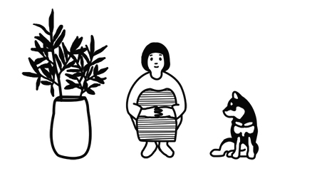
Здесь собраны некоторые и д е и или любые другие в е щ и, вдохновившие меня, поднявшие дух после дня на учебе или общения с преподавателями и студентами.
Week 1
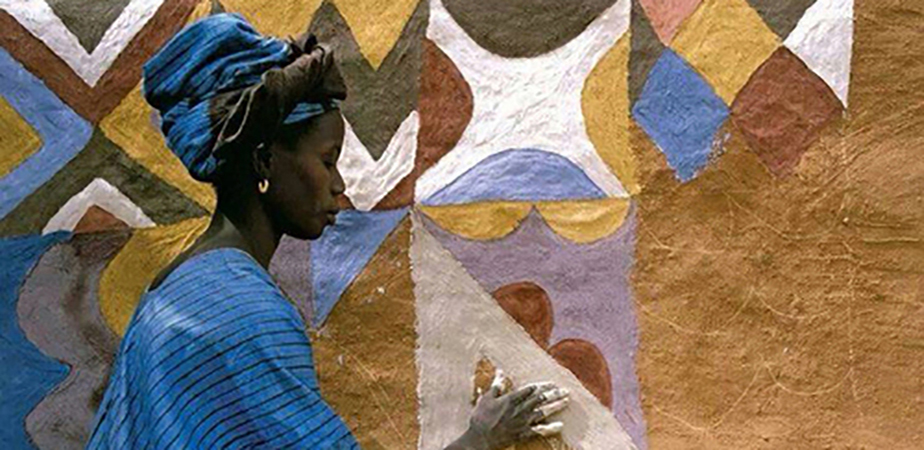 Тьебель ,Буркина-Фасо
История искусств
История искусств
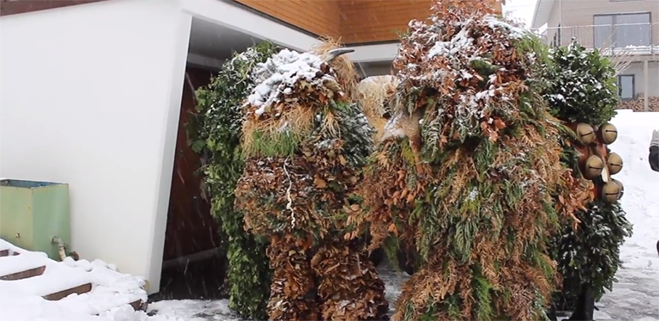Духи леса (Svaurige), Швейцария
История искусств
История искусств
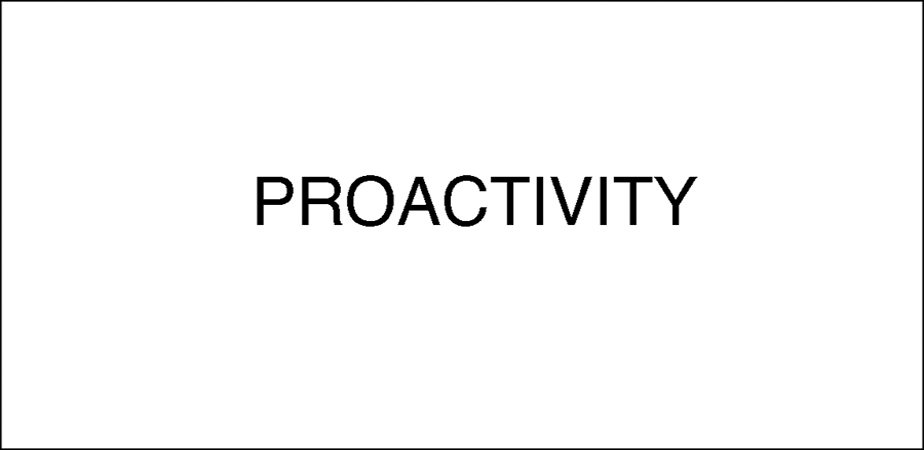Проактивность
Арт-практика
Арт-практика
Week 2
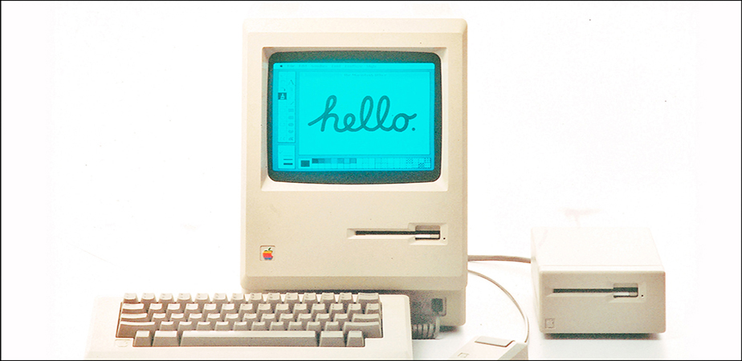История создания бренда Apple
Арт-практика
Арт-практика
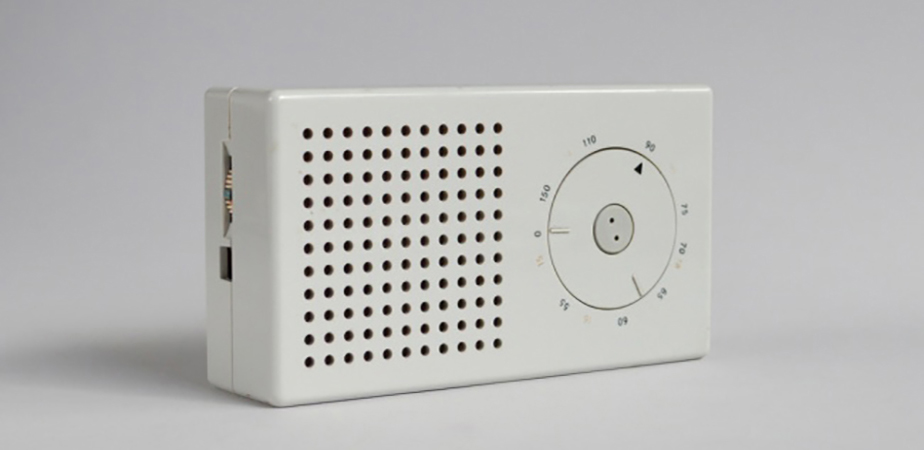
10 правил хорошего дизайна, Дитер Рамс
Арт-практика
Арт-практика
100 лет дизайна, bangbangeducation
Креативное проектирование
Креативное проектирование
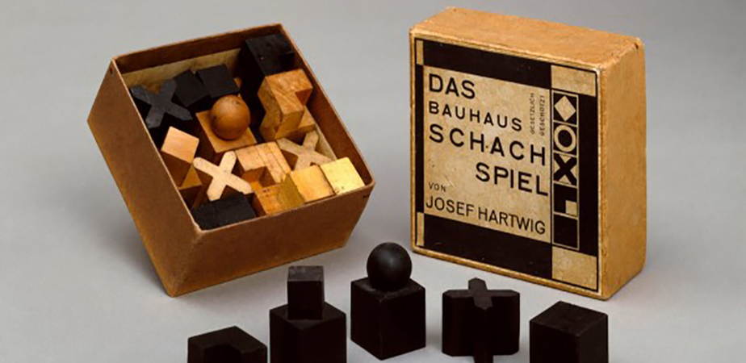
Шахматы Баухаус, 100 лет дизайна

Week 3
 История логотипа
История логотипаКреативное проектирование
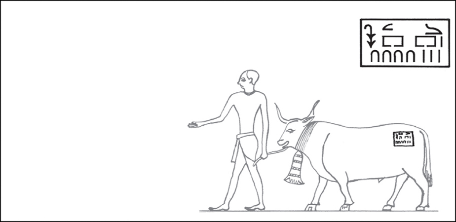
Тавро
Креативное проектирование
Креативное проектирование
Week 4
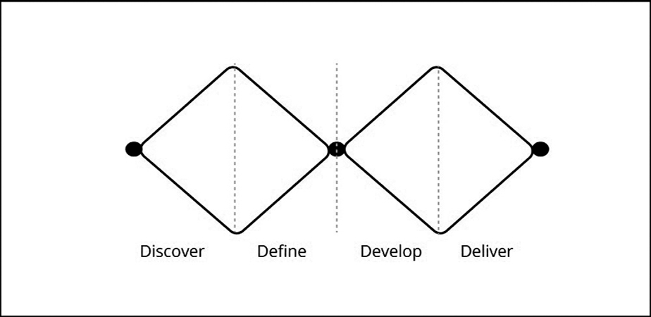
Система Diable Diamonds
Арт-практика
Арт-практика
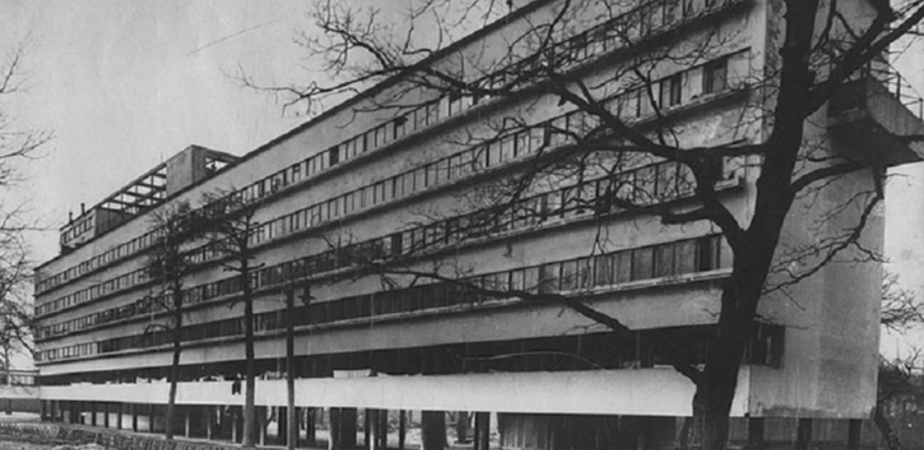
Дом Наркмофина
Арт-практика
Арт-практика
Week 5
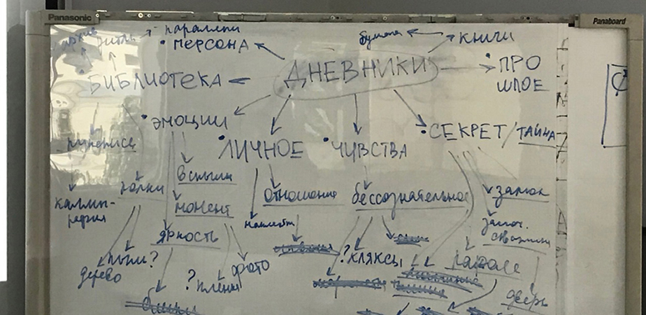
Матрица идей
Технологии дизайна
Технологии дизайна
Альтруизм
Социология
Социология
Week 6
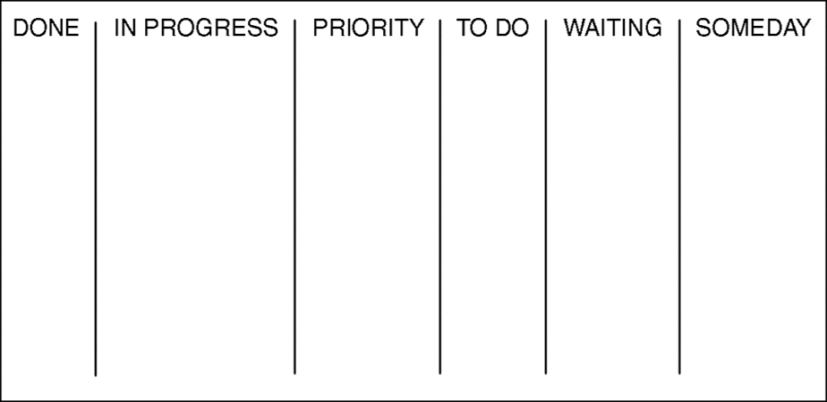
Система Канбан
Арт-практика
Арт-практика
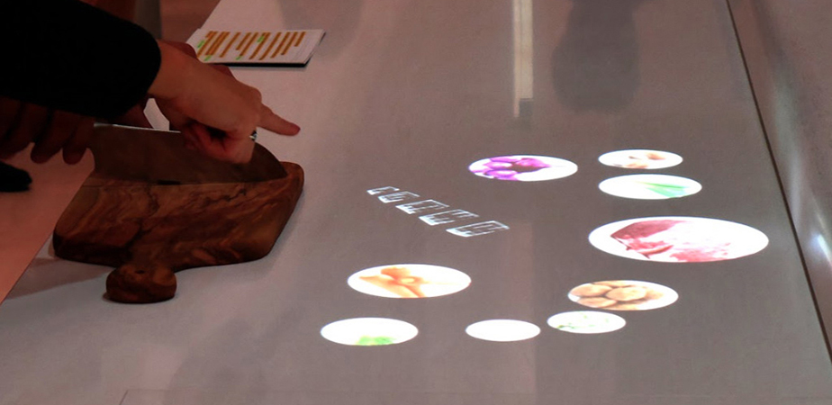
Умная кухня
История и теория дизайна
История и теория дизайна
Week 7

Максименко Яна, Б18ДЗ05